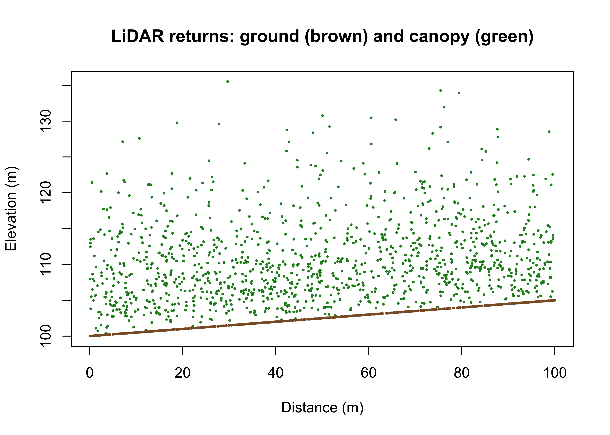

Airborne LiDAR measures the forest in three dimensions. A scanner fires laser pulses and times their return, and each pulse can produce several returns as it passes through the canopy: the first off the treetops, later ones off branches and understory, the last off the ground. The result is a dense point cloud, millions of x, y, z points, from which we reconstruct both the ground surface and the vegetation above it. Full-waveform sensors record the entire returned energy profile rather than discrete points, giving even finer vertical structure. The dedicated R package is lidR, which reads the LAS/LAZ files LiDAR ships in.
We illustrate the vertical structure with a simulated transect: a sloping ground surface with canopy returns scattered above it, exactly the mix a single scan line produces.
set.seed(1)n<-2000x<-runif(n, 0, 100)ground<-100+0.05*xcanopy<-runif(n)<0.6z<-ground+ifelse(canopy, rgamma(n, 2, 0.25), 0)plot(x, z, pch =20, cex =0.4, col =ifelse(canopy, "forestgreen", "tan4"), xlab ="Distance (m)", ylab ="Elevation (m)", main ="LiDAR returns: ground (brown) and canopy (green)")

5.2 Ground and canopy
Two surfaces come out of a point cloud. Classifying the lowest returns as ground and interpolating them gives the digital terrain model (DTM), the bare earth. Taking the highest returns gives the digital surface model (DSM), the top of the canopy. Their difference is the quantity forestry cares about, the canopy height model (CHM):
\[\text{CHM} = \text{DSM} - \text{DTM}\]
Ground classification is the delicate step, separating last returns that hit soil from those that hit low vegetation, and lidR implements the standard algorithms (cloth simulation, progressive morphological filters). The principle is that height above ground, not height above sea level, is what relates to biomass.
5.3 Building a CHM
Rather than process raw LAS here, we construct a CHM from the stem map, since each tree’s height and crown define the canopy top. We give every stem a height from its diameter with a standard saturating growth curve, then rasterise the maximum height in each 5-metre cell:
library(terra)library(sf)stems<-st_as_sf(read.csv("data/scbi_stems.csv"), coords =c("lon", "lat"), crs =4326)|>st_transform(32617)stems$height<-1.3+27*(1-exp(-0.035*stems$dbh))# DBH → height (m)v<-vect(stems)r<-rast(ext(v), resolution =5, crs ="EPSG:32617")#> Error:#> ! [rast] empty srschm<-rasterize(v, r, field ="height", fun =max, background =0)#> Error in `h()`:#> ! error in evaluating the argument 'y' in selecting a method for function 'rasterize': object 'r' not foundnames(chm)<-"canopy_height"#> Error:#> ! object 'chm' not foundplot(chm, main ="Canopy height model (m)")#> Error in `h()`:#> ! error in evaluating the argument 'x' in selecting a method for function 'plot': object 'chm' not found
5.4 Tree detection
A CHM lets you find individual trees: each treetop is a local maximum, a cell higher than its neighbours. This is the basis of individual-tree detection, and the crown-radius-varying window in ForestTools refines it. We do the core operation directly, flagging cells that equal the maximum in a moving window and clear a minimum height:
win<-focal(chm, w =matrix(1, 5, 5), fun =max, na.policy ="omit")#> Error in `h()`:#> ! error in evaluating the argument 'x' in selecting a method for function 'focal': object 'chm' not foundtops<-(chm==win)&(chm>5)#> Error:#> ! object 'chm' not foundtops[tops==0]<-NA#> Error:#> ! object 'tops' not foundtop_pts<-as.points(tops)#> Error in `h()`:#> ! error in evaluating the argument 'x' in selecting a method for function 'as.points': object 'tops' not foundnrow(top_pts)# detected treetops#> Error in `h()`:#> ! error in evaluating the argument 'x' in selecting a method for function 'nrow': object 'top_pts' not found
plot(chm, main ="Detected treetops")#> Error in `h()`:#> ! error in evaluating the argument 'x' in selecting a method for function 'plot': object 'chm' not foundplot(top_pts, add =TRUE, pch =3, cex =0.6)#> Error in `h()`:#> ! error in evaluating the argument 'x' in selecting a method for function 'plot': object 'top_pts' not found
5.5 Keystone: lidar-forestry
The lidar-forestry workflow chains exactly these steps into an inventory: classify ground, build the DTM and CHM, detect treetops, segment crowns, and derive canopy metrics that predict biomass. The reason it matters for verification is that a CHM covers every square metre, where field plots sample a fraction of a percent, so LiDAR turns a handful of plots into a wall-to-wall map, provided the plot-to-LiDAR relationship is calibrated and its error carried through.
The bridge to biomass is a canopy metric summarised per unit area and regressed on plot biomass. Mean canopy height is the simplest such metric:
cell_ha<-prod(res(chm))/1e4#> Error in `h()`:#> ! error in evaluating the argument 'x' in selecting a method for function 'res': object 'chm' not foundmetrics<-data.frame( mean_canopy_height =round(global(chm, "mean", na.rm =TRUE)[1, 1], 1), p95_height =round(quantile(values(chm), 0.95, na.rm =TRUE), 1), detected_trees =nrow(top_pts), area_ha =round(ncell(chm)*cell_ha, 1))#> Error in `h()`:#> ! error in evaluating the argument 'x' in selecting a method for function 'global': object 'chm' not foundmetrics#> Error:#> ! object 'metrics' not found
Detected trees will fall short of the true stem count, because the understory hides beneath the canopy and only dominant trees form local maxima. That gap is the central caution of LiDAR inventory: it sees the canopy, not the stand, and the correction comes from calibrating against field plots that do count every stem. The height metrics, by contrast, are robust and are what a LiDAR biomass model is built on. The full project fits that model and maps predicted biomass with its prediction error, the subject of the uncertainty chapter.
5.6 Exercises
Rebuild the CHM at 2-metre resolution and describe how the number of detected treetops changes. Why does a finer grid tend to split single crowns into several maxima?
Raise the minimum-height threshold in the detection step from 5 m to 15 m. How does the detected count change, and which trees are you now excluding?
Compute the 25th, 50th, 75th and 95th height percentiles of the CHM. Explain why upper percentiles are better biomass predictors than the mean.
(Applied.) You have LiDAR over 10,000 ha and field plots on 30 ha. Describe, in steps, how you would use the plots to calibrate a CHM-based biomass model and produce a wall-to-wall estimate, and where the two main sources of error enter.
Source Code
---title: "LiDAR and Point Clouds"format: docx: reference-doc: ./references/style.docx highlight-style: githubexecute: eval: true echo: true warning: false message: falseknitr: opts_chunk: prefer-html: true dev: "png" dpi: 300bibliography: ./references/references.bibcsl: ./references/apa.csl---## Point cloudsAirborne LiDAR measures the forest in three dimensions. A scanner fires laser pulses and times their return, and each pulse can produce several returns as it passes through the canopy: the first off the treetops, later ones off branches and understory, the last off the ground. The result is a dense point cloud, millions of x, y, z points, from which we reconstruct both the ground surface and the vegetation above it. Full-waveform sensors record the entire returned energy profile rather than discrete points, giving even finer vertical structure. The dedicated R package is `lidR`, which reads the LAS/LAZ files LiDAR ships in.We illustrate the vertical structure with a simulated transect: a sloping ground surface with canopy returns scattered above it, exactly the mix a single scan line produces.```{r}set.seed(1)n <-2000x <-runif(n, 0, 100)ground <-100+0.05* xcanopy <-runif(n) <0.6z <- ground +ifelse(canopy, rgamma(n, 2, 0.25), 0)plot(x, z, pch =20, cex =0.4,col =ifelse(canopy, "forestgreen", "tan4"),xlab ="Distance (m)", ylab ="Elevation (m)",main ="LiDAR returns: ground (brown) and canopy (green)")```## Ground and canopyTwo surfaces come out of a point cloud. Classifying the lowest returns as ground and interpolating them gives the digital terrain model (DTM), the bare earth. Taking the highest returns gives the digital surface model (DSM), the top of the canopy. Their difference is the quantity forestry cares about, the canopy height model (CHM):$$\text{CHM} = \text{DSM} - \text{DTM}$$Ground classification is the delicate step, separating last returns that hit soil from those that hit low vegetation, and `lidR` implements the standard algorithms (cloth simulation, progressive morphological filters). The principle is that height above ground, not height above sea level, is what relates to biomass.## Building a CHMRather than process raw LAS here, we construct a CHM from the stem map, since each tree's height and crown define the canopy top. We give every stem a height from its diameter with a standard saturating growth curve, then rasterise the maximum height in each 5-metre cell:```{r}library(terra)library(sf)stems <-st_as_sf(read.csv("data/scbi_stems.csv"),coords =c("lon", "lat"), crs =4326) |>st_transform(32617)stems$height <-1.3+27* (1-exp(-0.035* stems$dbh)) # DBH → height (m)v <-vect(stems)r <-rast(ext(v), resolution =5, crs ="EPSG:32617")chm <-rasterize(v, r, field ="height", fun = max, background =0)names(chm) <-"canopy_height"plot(chm, main ="Canopy height model (m)")```## Tree detectionA CHM lets you find individual trees: each treetop is a local maximum, a cell higher than its neighbours. This is the basis of individual-tree detection, and the crown-radius-varying window in `ForestTools` refines it. We do the core operation directly, flagging cells that equal the maximum in a moving window and clear a minimum height:```{r}win <-focal(chm, w =matrix(1, 5, 5), fun = max, na.policy ="omit")tops <- (chm == win) & (chm >5)tops[tops ==0] <-NAtop_pts <-as.points(tops)nrow(top_pts) # detected treetops``````{r}plot(chm, main ="Detected treetops")plot(top_pts, add =TRUE, pch =3, cex =0.6)```## Keystone: lidar-forestryThe lidar-forestry workflow chains exactly these steps into an inventory: classify ground, build the DTM and CHM, detect treetops, segment crowns, and derive canopy metrics that predict biomass. The reason it matters for verification is that a CHM covers every square metre, where field plots sample a fraction of a percent, so LiDAR turns a handful of plots into a wall-to-wall map, provided the plot-to-LiDAR relationship is calibrated and its error carried through.The bridge to biomass is a canopy metric summarised per unit area and regressed on plot biomass. Mean canopy height is the simplest such metric:```{r}cell_ha <-prod(res(chm)) /1e4metrics <-data.frame(mean_canopy_height =round(global(chm, "mean", na.rm =TRUE)[1, 1], 1),p95_height =round(quantile(values(chm), 0.95, na.rm =TRUE), 1),detected_trees =nrow(top_pts),area_ha =round(ncell(chm) * cell_ha, 1))metrics```Detected trees will fall short of the true stem count, because the understory hides beneath the canopy and only dominant trees form local maxima. That gap is the central caution of LiDAR inventory: it sees the canopy, not the stand, and the correction comes from calibrating against field plots that *do* count every stem. The height metrics, by contrast, are robust and are what a LiDAR biomass model is built on. The full project fits that model and maps predicted biomass with its prediction error, the subject of the uncertainty chapter.## Exercises1. Rebuild the CHM at 2-metre resolution and describe how the number of detected treetops changes. Why does a finer grid tend to split single crowns into several maxima?2. Raise the minimum-height threshold in the detection step from 5 m to 15 m. How does the detected count change, and which trees are you now excluding?3. Compute the 25th, 50th, 75th and 95th height percentiles of the CHM. Explain why upper percentiles are better biomass predictors than the mean.4. *(Applied.)* You have LiDAR over 10,000 ha and field plots on 30 ha. Describe, in steps, how you would use the plots to calibrate a CHM-based biomass model and produce a wall-to-wall estimate, and where the two main sources of error enter.